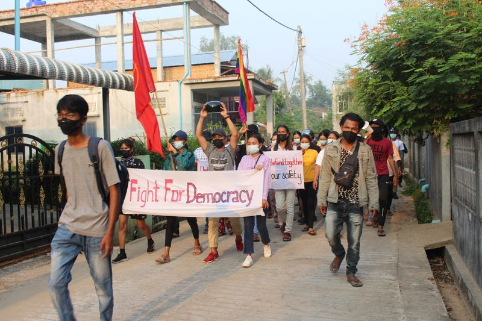

Four killed in Myanmar protests, World Bank warns of slump
(Reuters) -Myanmar security forces shot dead four pro-democracy protesters on Friday, witnesses and local media reports said, as activist leaders called for a huge show of defiance to the ruling military junta on the country’s Armed Forces Day on Saturday.
The World Bank said Myanmar’s economy could slump 10% this year due to the turmoil since the coup last month that overthrew the elected government of Aung San Suu Kyi.
But in a week that saw international pressure on the generals ramped up with new U.S. and European sanctions, Russia offered support for the military and said it wanted to strengthen ties.
Protesters against the junta have taken to the streets almost daily since the Feb.1 coup, prompting an uncompromising crackdown by the security forces.
Demonstrations took place across the country overnight and on Friday, including in the Mandalay and Sagaing regions, as well as in Karen and Chin states, media reports said
Security forces opened fire on protesters waving black flags in the southern town of Myeik, a witness said.
'Two were killed by head shots,' the witness told Reuters.
'We cannot pick up the (third) dead body as many security forces are there'.
Several other people were wounded, said the witness, who requested anonymity for fear of retribution.
Another witness said he had seen a fourth body.Myanmar Now news said four people were killed in the town.
At least 320 people have been killed in the weeks of unrest that followed the coup, according to figures as of Thursday night from the Assistance Association for Political Prisoners (AAPP) activist group.
Its data shows that at least 25 percent of those who were killed died from shots to the head, raising suspicions they were deliberately targeted for killing.
Reuters could not independently verify the numbers killed.A military spokesman did not respond to calls seeking comment.
The United Nations’ special envoy on Myanmar, Christine Schraner Burgener, said the military had turned against its own citizens.
'Women, youth and children have been among those killed,' she said in a statement.
U.S. Ambassador Thomas Vajda and his wife Amy Sebes placed a wreath in front of a Yangon school where a protester was shot and killed last month.
'We honour the memory of all those who have lost their lives since the February 1 coup,' the embassy said in a Twitter post.
Half an hour later, troops took the wreath away, witnesses said.
STRATEGIC ALLY
While Western powers have condemned the coup and the lethal crackdown, Russia said it wanted to strengthen ties with the Myanmar military.
Russian deputy defence minister Alexander Fomin met junta leader Senior General Min Aung Hlaing on Friday and said Myanmar was a reliable ally and strategic partner of Moscow, Tass news agency reported.[L4N2LO2H6]
Moscow’s support for the junta is important as it is a permanent member of the United Nations Security Council and along with China, which has also refrained from criticism, can block potential U.N. actions.
The World Bank on Friday slashed its forecast for Myanmar’s economy to a 10% contraction in 2021 from the growth expected previously.
Myanmar 'has been heavily affected by protests, worker strikes, and military actions', it said.
The forecast came after the United States, Britain and the European Union imposed new sanctions on groups and individuals linked to the coup.
The targets included Myanma Economic Holdings Public Company Limited and Myanmar Economic Corporation Limited, both part of a military-controlled network that spans sectors from mining to tourism and has enriched the generals.
‘WAR HAS NOT ENDED’
A group of about 100 people beating drums held a protest in the downtown Sule area of the commercial capital Yangon before being chased away by security forces, witnesses said.
'This war has not ended until we win,' one protester, Phone Naing, told Reuters.'I will fight them as much as we can.'
Organisers have called for widespread protests on Saturday, observed as Armed Forces Day commemorating the start of the military’s resistance to Japanese occupation in 1945.
'We have to revive that history on March 27, 2021 in this spring revolution,' wrote Ei Thinzar Maung, a protest leader, in a social media post.
'The day for the people to revolt against the Tatmadaw (military), which has been oppressing people for ages…has come again.'
Authorities freed about 300 protesters on Friday who had been detained in Yangon, witnesses and news reports said.About 1,000 have previously been freed from a total of about 3,000 arrested, the AAPP activist group has said.
However, Aung San Suu Kyi, Myanmar’s most prominent civilian politician, remains in detention at an undisclosed location.Many other figures in her National League for Democracy are also being held in custody.
The military says it acted because the NLD’s victory in an election last November was marred by fraud – a claim rejected by the electoral commission and many foreign governments.It has placed the country under a state of emergency and said it will organise a new election, though it has not set a date.
Unknown attackers hurled petrol bombs at the headquarters of the NLD in Yangon early on Friday, the Myanmar Now portal reported.There were no casualties and some furniture was damaged, it said.
Residents said that after dark on Thursday, soldiers raided Yangon’s Mingalar Taungnyunt district and arrested people on the streets after curfew.
(Reporting by Reuters Staff; Writing by Ed Davies and Raju Gopalakrishnan; Editing by Michael Perry Simon Cameron-Moore)
Posted On: 2021-03-26T00:00:00

Content Date: 2021-03-26
Download Date: 2021-04-17
Document ID: L0C04A5HK